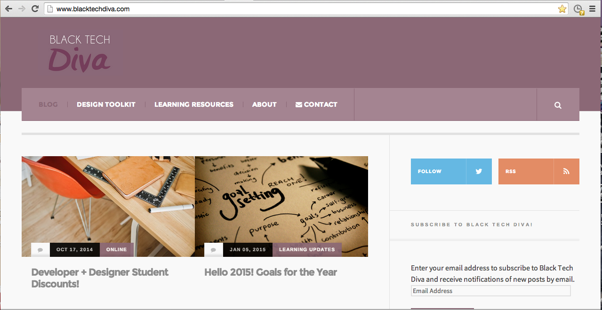
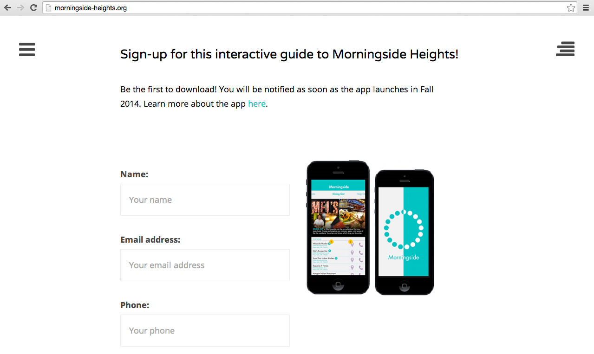
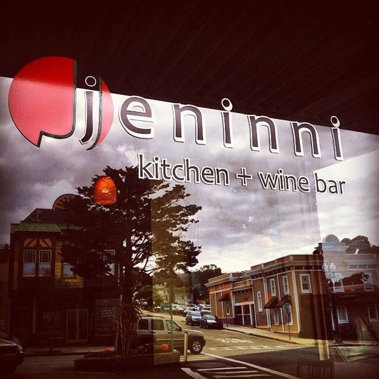
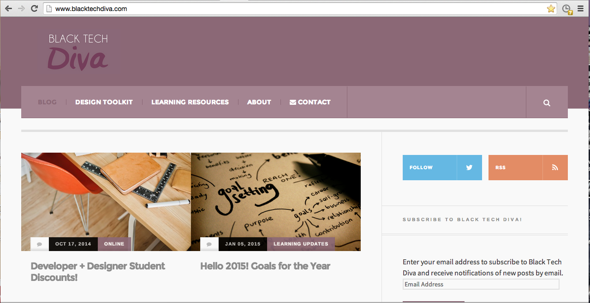
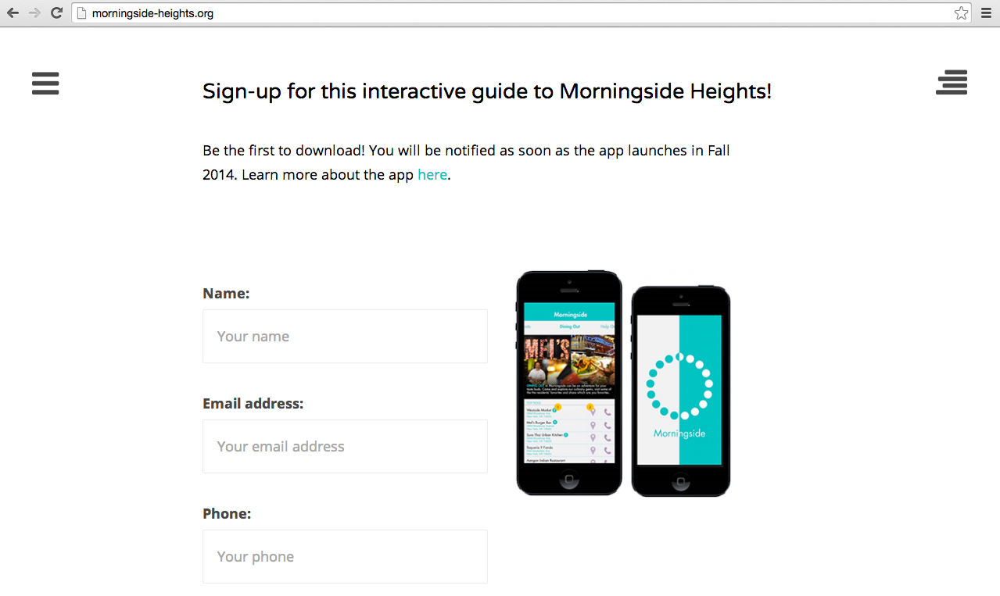
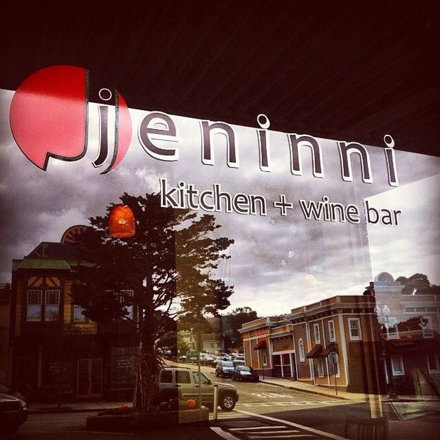
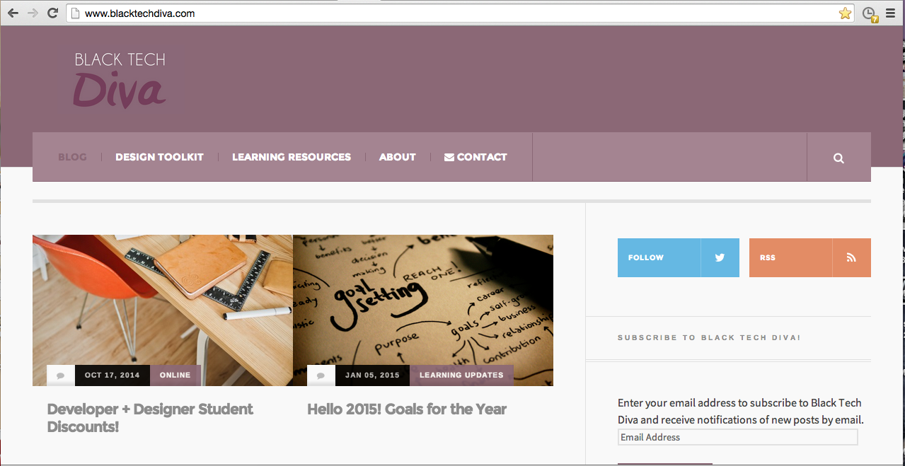
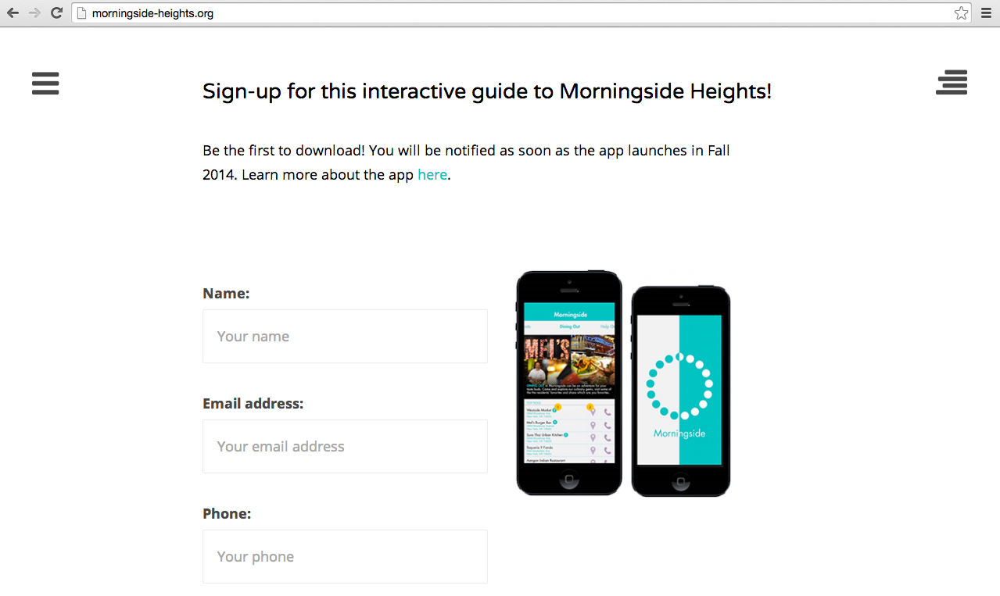
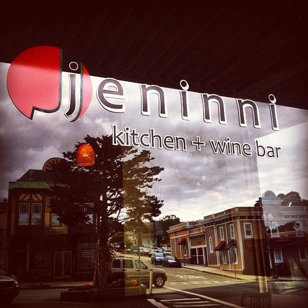

 >
>
Monica Powell is a senior at Barnard College, Columbia University where she is studying Psychology. Her interest in empowering women in technology led her to the founding team of Athena Digital Design , a web development agency at Barnard College. She provides print + web design services and is eager to assist with projects in any part of the design process.
In her free time, she loves exploring New York City and also enjoys volunteering for organizations and causes such as Black Girls Code, STRIVE, the There is Hope Campaign and the Desai Foundation.
Please, scroll down to view her recent projects.
Software: Microsoft Office: Word, Excel & Powerpoint. Adobe Creative Suite: Photoshop, InDesign & Illustrator. Wordpress and SPSS.
Social Media: Twitter, Facebook, Tumblr and Pinterest.
Languages and libraries: Working Knowledge: HTML/CSS, jQuery and Twitter Bootstrap. Basic Knowledge: Java
Other Technical Skills: SFTP/FTP,Wordpress migration, Google Chrome Dev Tools, command line, Sublime Text and source control (Git/GitHub).



>